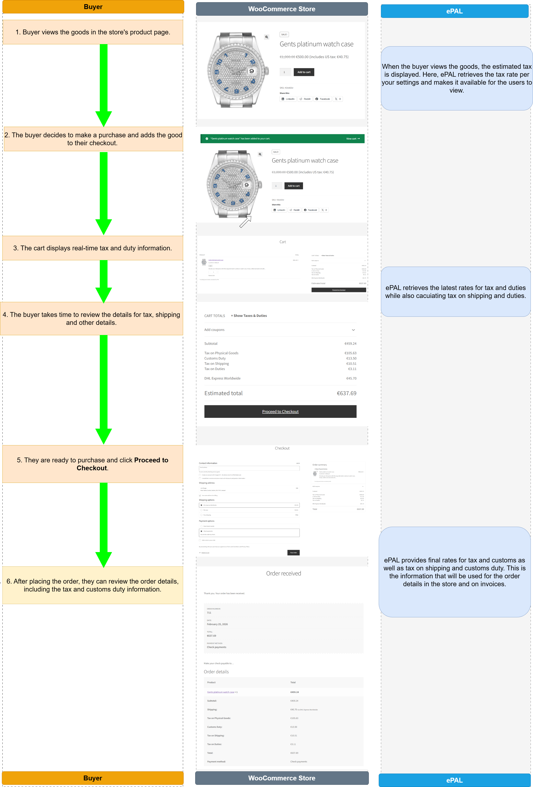
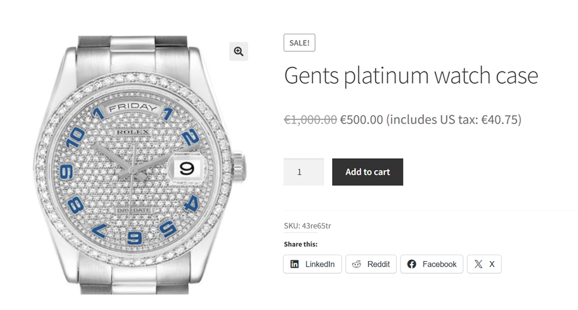
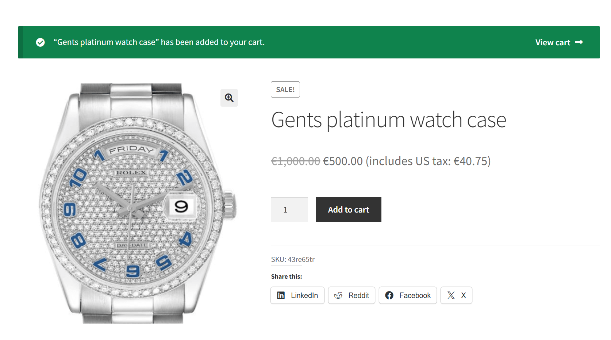
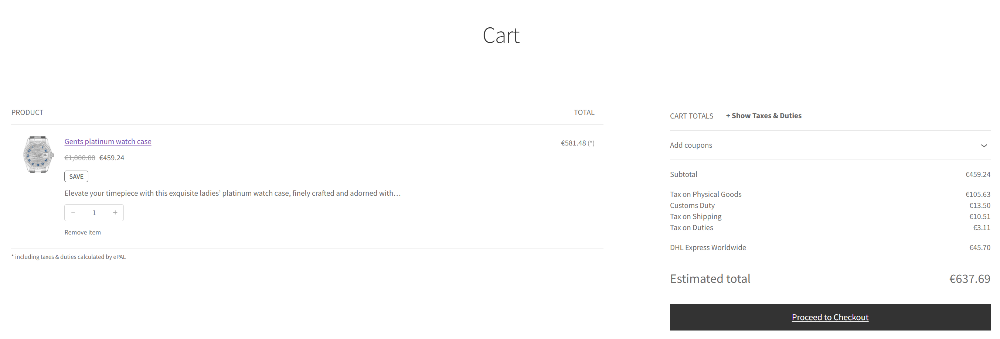
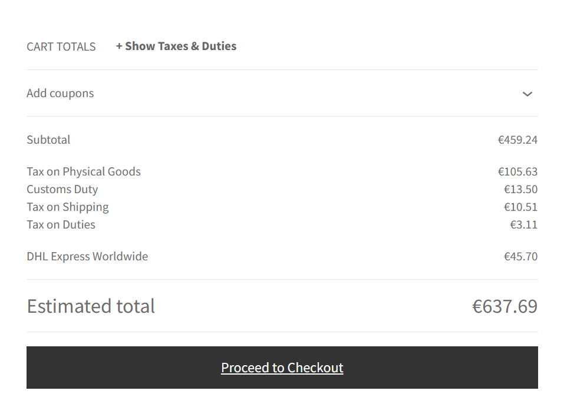
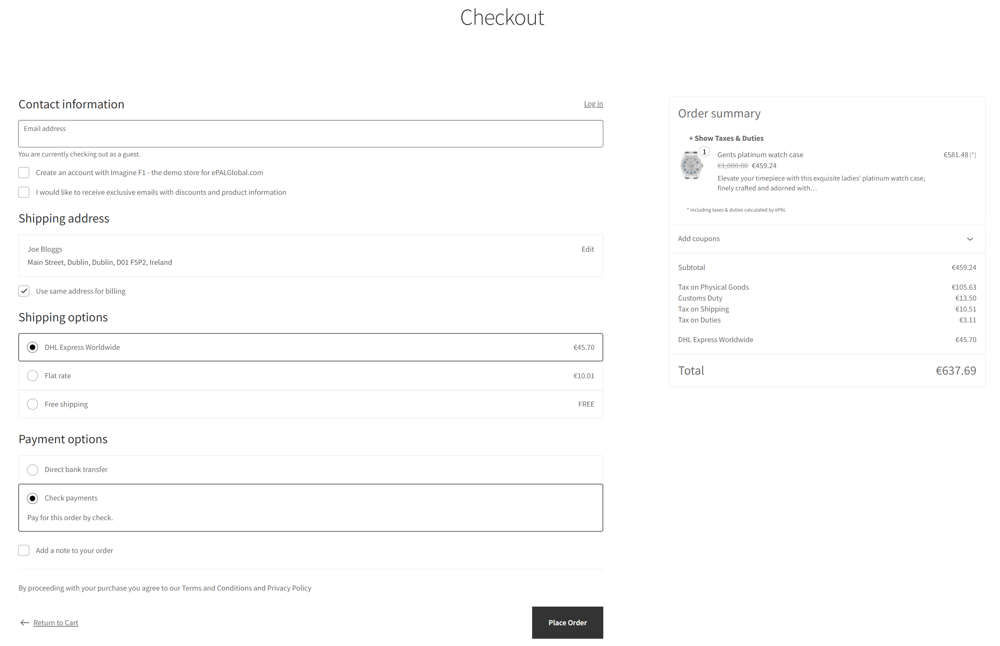
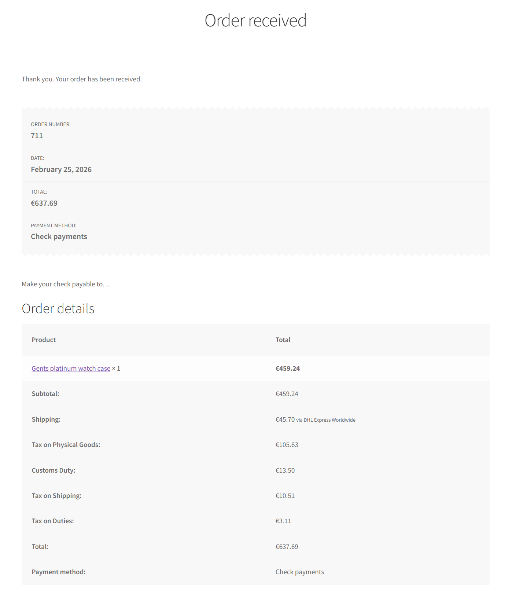

How does ePAL Work?
This topic explains how ePAL integrates with the order processing flow in WooCommerce from purchase to shipping.
This example uses the ePAL demo store. You can visit it here.
This examples walks through a typical buyer scenario where the they purchase a good, highlighting where ePAL helps in this process.
The example is divided into 2 parts, showing an example flow for purchasing and fulfilment so you can see how ePAL helps the buyer and the seller from their perspectives.
Assumptions
- This scenario is a B2C transaction where the buyer is in the European Union (EU) (Ireland) and the seller is based in the United States of America (USA).
- The merchant has configured their WooCommerce store to use real-time tax rates from ePAL.
Buyer's Steps (Purchasing)
The following graphic represents the steps in a typical purchasing scenario, from the buyer's perspective. It also highlights where ePAL helps in this processs:

- A buyer views the goods in the WooCommerceStore.
Figure 2. Product Page 
ePAL: When the buyer views the goods, the estimated tax is displayed. Here, ePAL retrieves the tax rate per your settings and makes it available for the users to view.
- The buyer decides to make a purchase and adds the good to their checkout by
clicking Add to cart.
Figure 3. Goods added to cart 
- They click View Cart to proceed with the purchase.
Figure 4. Cart Details 
ePAL: Here, ePAL provides details about the indirect tax, the customs duty, as well as tax on duty and shipping. This ensures the most accurate fully landed costs.
- The buyer takes time to review the details for tax, shipping and other details.
Figure 5. Review details 
- They are ready to purchase and click Proceed to
Checkout.
Figure 6. Checkout 
ePAL: ePAL provides final rates for tax and customs as well as tax on shipping and customs duty. This is the information that will be used for the order details in the store and on invoices.
- After placing the order, they can review the order details, including the
tax and customs duty information.
Figure 7. Order Details 
- The buyer receives a mail confirming the order.
- The buyer receives the goods.
ePAL: ePAL helps ensure that the shipping label contains all the details needed for fully landed costs, ensuring the buyer receives their goods quickly and without the need for any further intervention to pay outstanding custom duties.
Merchant's Steps (Fulfilment)
The following graphic represents the steps in a typical fulflilment scenario, from the seller's perspective. It also highlights where ePAL helps in this processs:
- The merchant receives the order.
- They approve it in WooCommerce.
- They generate a shipping label.
- They fulfiull the order, sending an invoice to the buyer and preparing the
goods for shipping.
ePAL: